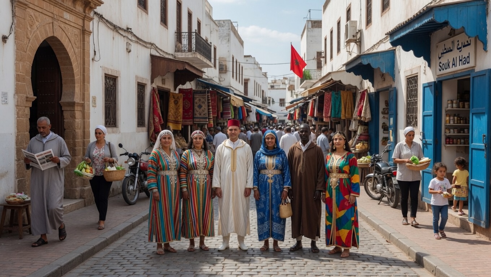
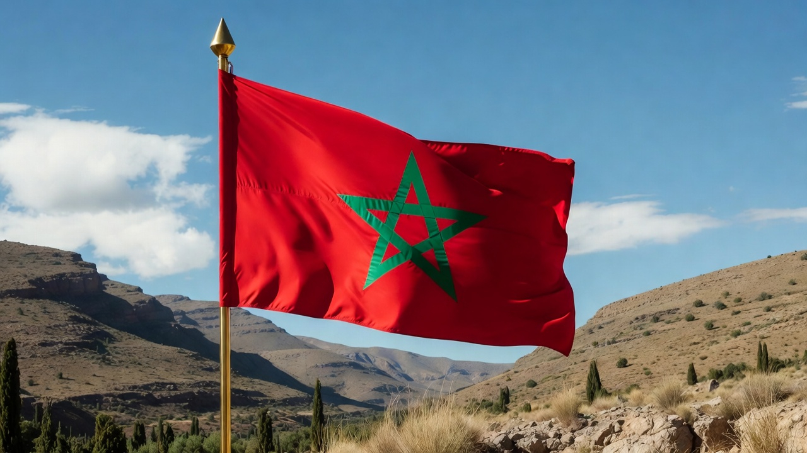
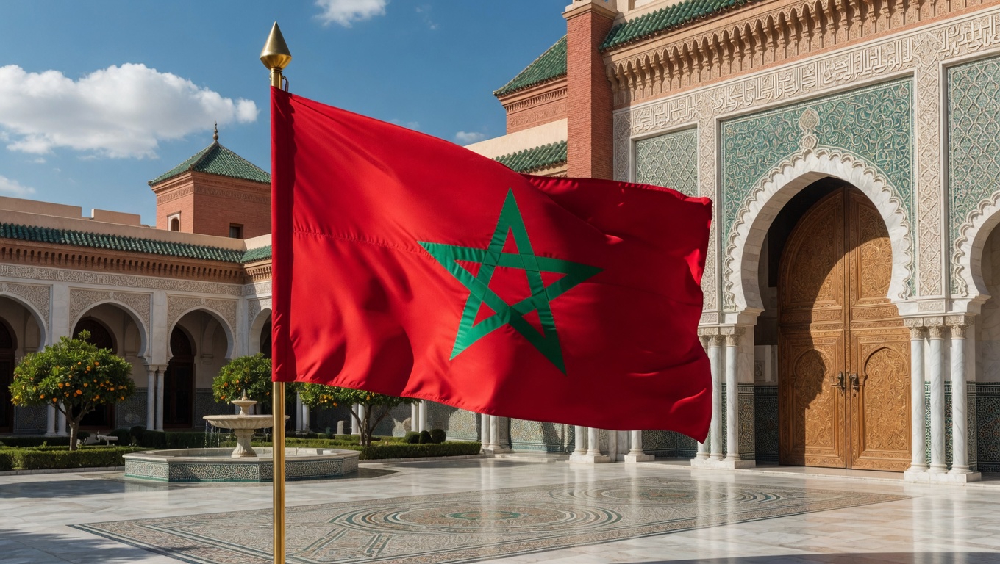
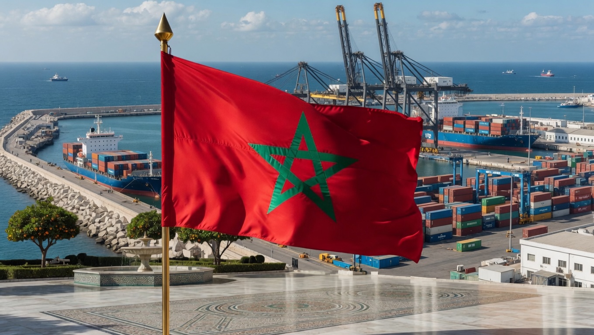

🔒 Documento de circulación interna restringida. Su entrada quedará auditada.
Medio: vecinoslaserena.cl | Locación: Centro Cultural Mohammed VI / Mezquita de Coquimbo
Kenza El Ghali
Embajadora del Reino de Marruecos en Chile
Santiago de Chile
Potenciar relaciones culturales, educativas y comerciales Marruecos–Chile. Énfasis en cooperación en energías renovables e intercambio académico.
⚠️ Reconfirmar disponibilidad 72 hrs antes del rodaje.
Símbolo de la hermandad chileno-marroquí. Modelo para pre-visualización de tomas de dron y escenografía de terreno.




Documento clasificado — uso exclusivo del equipo editorial.
Escucha el overview especial de nuestro equipo de investigación: